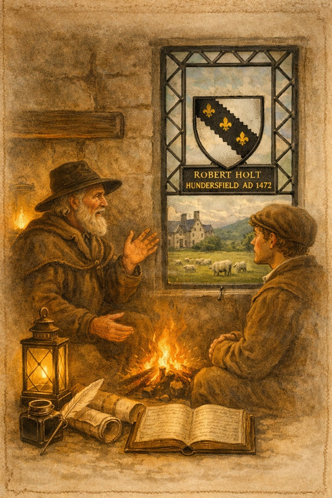

Lancashire folklore
Tyrone's Bed

In the early years of the 17th century, 1603, Gristlehurst Hall was home to Thomas Holt and his daughter Constance, a young woman remembered in local lore for her beauty and gentle nature. One summer’s day, while walking near the river that winds below the Hall, Constance slipped on the bank and fell into the water. She was rescued by a stranger of noble bearing who refused to give his name. During her recovery, the two grew close, and Constance soon discovered that her rescuer was no ordinary traveller.
He was Hugh O’Neill, Earl of Tyrone, the great Irish chieftain who had led the Ulster resistance against the English Crown. Defeated and hunted, he had fled Ireland and was secretly moving through Lancashire, sheltered by sympathisers and Catholic families. The Holts of Gristlehurst, long associated with the old faith, were among those who offered him refuge.
Constance concealed the Earl in a hidden chamber within the Hall being a narrow, timbered recess later known in local speech as “Tyrone’s Bed.” Search parties passed through the district, and soldiers were said to have ridden up the drive more than once, but the Earl remained undiscovered. During these weeks of concealment, affection deepened into love, though both knew the situation could not last.
When the danger eased, Tyrone slipped away under cover of night, promising to return if ever his fortunes changed. Constance, worn by fear and secrecy, fell into a lingering illness. Months later news reached Lancashire that Queen Elizabeth was dead and that the new king, James I, had granted Tyrone a pardon. True to his word, the Earl returned to Gristlehurst to seek Constance.
But the shock of seeing him again and the sudden fulfilment of a hope she had scarcely allowed herself to keep was too much for her weakened frame. Tradition says she died in his arms, and that the Earl, heartbroken, left England soon after, never to return.
The hidden recess in Gristlehurst Hall remained known for generations as Tyrone’s Bed, and the story became one of the most enduring romantic legends attached to the Holt family.
Waugh, Edwin. Lancashire Sketches. Third Edition. London: Simpkin, Marshall & Co., and Manchester: A. Ireland & Co., 1869. (Includes the chapter “The Grave of Grislehurst Boggart.”)
Forbidden Love
Robert Holt, nephew of Sir Thomas Holt of Gristlehurst, served quietly as priest at Ashworth during a period when the old faith was practised in secret. He was known for his learning and gentle manner, and it was no surprise that Margaret Scolfeld, a young woman of good character from a nearby family, grew close to him. Their affection deepened into love, though both knew it could not be openly acknowledged. Under the laws of the time, a Catholic priest could not marry, and discovery would have meant disgrace for him and danger for her.
Robert’s twin brother, Thomas Holt, had himself suffered for his beliefs. Once a parish priest in London, he had been deprived of his living for nonconformity. He returned to Lancashire convinced that the winds of change were blowing, and he argued that under the newer interpretations of the law, priests could marry. Whether this was wishful thinking or a sincere reading of the shifting religious landscape, it gave Robert and Margaret a fragile hope.
But not everyone wished them well. Miles Plowman, a man of some local standing, had long pursued Margaret. She rejected him firmly, remaining loyal to Robert despite the secrecy their relationship demanded. Plowman’s frustration grew into resentment, and one evening he attempted to force a kiss upon her. Robert, arriving by chance, intervened and pulled Plowman away, making clear that Margaret was under his protection.
The confrontation stirred gossip. Some whispered that Robert had broken his vows; others admired his courage. Margaret’s family stood by her, but the tension in the parish deepened. Plowman, humiliated, spread rumours that Robert was unfit for his office, hoping to bring him down through scandal rather than strength.
Local tradition says that Robert and Margaret continued to meet in quiet places—Ashworth woods, the edge of the moor, the sheltered paths near the chapel—always careful, always aware that discovery could ruin them both. Whether they ever married in secret, as some later stories suggest, is unknown. What is certain is that their bond endured despite the pressures of the time.
In the end, the tale survives not because of scandal but because of its tenderness: a priest caught between duty and love, a woman steadfast in her loyalty, and a family—like many in Lancashire—trying to navigate the shifting ground between old faith and new law.
It is one of those Holt stories where history and emotion intertwine, leaving behind a memory that feels as real as any recorded event.
Mary Queen of Scots
William Holt (born 1545) second son of Robert Holt (Rochdale / Ashworth) is a famous member of the family. He graduated with a BA at Oxford and became a Master of Arts of Cambridge. Dissatisfied with the Church of England he went to Donay in 1574 where he studied theology and was ordained. Being sent to Rome he entered the society of Jesus in 1578. In 1581 he was employed by the imprisoned Queen of Scots on an embassy to her son King James. William Holt of Ashworth and William Crichton were sent to Scotland to procure conversion or deposition of young James VI and send information to Mary and Philip II of Spain. He was arrested at Leith in 1583 and tortured, Queen Elizabeth hoping to discover information on plots against her. Nothing was obtained from him and he was liberated in 1584 and sent abroad. He continued to work for the Catholic religion and died in Barcelona in 1599.Robert and Thomas were getting ready to celebrate mass on a Sunday morning and a band of men surrounded the church. They were led by a priest called Warham. Thomas was robed in a chasuble and taking the chalice to the altar so Robert rushed to the door of the church to confront the mob so that his brother would not be slain if he was seen. He said he was willing to conform to gain time but wished to celebrate his last mass. Miles Plowman saw his chance and raised his bow and arrow. Only Margaret saw him and ran forwards and flung her arms round the one she loved most in the world. The arrow passed through her back and entered the heart of the courageous priest. Thomas came out of the church holding the sacred chalice and the silence of shock struck the villagers. Thomas then celebrated mass for the last time. Ashworth chapel is said to be haunted by their ghosts.
Witchcraft Trials
Before he became Lord Chief Justice of England, Sir John Holt (1642–1710) was a young barrister travelling between Oxford and London. According to the old Lancashire and Oxfordshire stories, he once found himself stranded at a country inn with no money to pay for his lodging. The landlady’s daughter happened to be ill with a fever, and Holt — quick witted even in youth — offered to “charm” the sickness away.
He wrote a few Greek characters on a strip of parchment, tied it around the girl’s arm, and solemnly declared it a healing spell. The girl recovered naturally, and the grateful landlady gave him a week’s board and lodging. Holt later admitted the whole thing was nothing more than a harmless ruse to avoid embarrassment.
Years passed. Holt rose through the legal ranks and became known for his sharp mind and his scepticism toward superstition. When he was appointed Lord Chief Justice, he presided over several witchcraft trials — and became famous for refusing to accept flimsy or fantastical evidence.
One day, an elderly woman was brought before him, accused of sorcery. Among the “proofs” produced by the prosecution was a parchment charm said to have been found in her cottage. To Holt’s astonishment, he recognised it instantly: it was the very scrap he had written years earlier at the inn.
He stopped the trial, told the jury the true origin of the parchment, and declared that if his own nonsense scribbles could be used as evidence of witchcraft, then the entire case was worthless. The woman was acquitted, and Holt’s reputation as a rational, fair
A Ghostly Tale
Castleton Hall, once associated with branches of the Holt family, carried a reputation for uneasy spirits long before the visitor and his wife spent their troubled night there. The chamber they slept in was known locally as “the Murder Room,” for tradition held that a young woman sometimes said to be a servant, sometimes a relative of the Holts had met a violent end within its walls. No record survives to confirm the event, yet the story persisted with the stubbornness typical of Lancashire folklore.
The couple who stayed there reported hearing soft footsteps crossing the floorboards, followed by the unmistakable sound of a woman sobbing near the bed. When the wife lit a candle, the flame guttered violently, as if disturbed by a sudden draught, though the windows were fastened. The husband later claimed he saw the outline of a figure near the hearth slight, feminine, and bent as though in grief before it faded into the panelling.
By morning they were so shaken that the vicar of Rochdale was summoned to perform an exorcism. He read prayers in the haunted chamber and sprinkled holy water along the threshold, declaring that whatever spirit lingered there was “restless, but not malicious.”
Local people, however, had their own explanation. They whispered that the ghost belonged to a young woman wronged by a member of the Holt family generations earlier—either betrayed in love or silenced after witnessing some family quarrel. In some tellings she was connected to the Grislehurst Holts, in others to the Castleton branch, but the theme was always the same: a woman whose death had been hushed, leaving her spirit to wander the Hall in sorrow.
Even after the exorcism, servants refused to sleep in that room, and travellers passing the Hall at night claimed to see a pale shape at the upper window. The story became one of those enduring Holt legends, like the Grislehurst Bogart, where history and superstition blur until the tale becomes part of the landscape itself.
Songs, Sonnets and Poems
Tuberville's Songs and Sonnets
Ye that frequent the hilles
And highest holtes of all,
Assist me with your skilful quilles
And listen when I call.
Taken from Heywoods of Heywood a poem shows a short picture of
Lancashire 270 years ago. The first few lines are
High holte of woods, or haye enclosed with woods,
Or woodie Isle surrownded with fierce floods
Thy antique bounds; from whence so ere thou haue,..
The reference "High holte of woods" is to the name of Heywood
near Rochdale in Lancashire and its probable etymology. The ancient
spelling is Eywode, which is understood to describe in Saxon
words the wood bounded by the water. The site of the modern
town of Heywood when the name was given was occupied by a large
wood which covered the high bank overlooking the endge of the cliff.
The Grislehurst Bogart
Among the old stories whispered around Grislehurst Hall, none was repeated more often than the tale of the Grislehurst Bogart. Long before the Hall fell into quiet decay, folk spoke of a presence that haunted the wooded fringe of the Holt estate—a shifting shadow that kept to the edges of sight, as if watching but unwilling to be seen.
Travellers returning from the moor at dusk told of hearing soft footfalls behind them, though no living creature followed. Others swore they glimpsed a stooped figure slipping between the oaks, its outline dissolving like mist when approached. Some believed it to be the troubled spirit of an early Holt, denied rest by some forgotten wrong; others said it was older still, a guardian of the ancient boundaries long before the Hall was raised.
Whatever its nature, the Bogart was treated with wary respect. Children were warned not to stray into the trees after sundown, and farmhands returning late would tip their caps to the darkening wood. Even in later years, when the estate’s grandeur faded and the old families moved on, the tale endured. The Bogart lingered in the collective memory of Whitworth—one of those stubborn Lancashire spirits that clings to a place long after the people who first feared it have vanished
Waugh, Edwin. Lancashire Sketches. Third Edition. London: Simpkin, Marshall & Co., and Manchester: A. Ireland & Co., 1869. (Includes the chapter “The Grave of Grislehurst Boggart.”)
Ashworth Hall Lights
Old stories tell of strange lights that wandered the moorland edge near Ashworth Hall, drifting low across the heather on still nights. Locals called them “Hall Lights,” faint glimmers that flickered like lanterns carried by unseen hands. Some believed they were warnings of an approaching death in the Holt family; others said they marked the return of an absent heir. Whether omen or illusion, the lights became part of the landscape’s memory, a quiet reminder that the moors kept their own counsel long after the Hall fell silent.
The Rider on the Clough
Along the track between Grislehurst and Simpson Clough, travellers sometimes spoke of a lone horseman who appeared at dusk, riding with a steady, unhurried pace. He never spoke, never turned his head, and vanished as quickly as he came. Some said he was a Holt messenger who died on the road; others believed he was a loyal retainer still guarding the approach to the old estate. Whatever the truth, the Rider on the Clough became one of those boundary spirits that linger where land and memory meet.
The Old Road Charm
In the days when the road between Castleton and Rochdale was little more than a rough track, a tale circulated that a Holt ancestor had placed a charm upon it after a robbery or feud. The route was said to be “Holt‑watched,” protected from mischief and ill intent. Highwaymen avoided it, and travellers claimed that misfortune befell anyone who tried to waylay riders there. Whether born of fear or gratitude, the story endured, giving the old road a reputation for uncanny safety in a lawless age.
The Holt Watch‑Dog
Near the Holt lands at Ashworth stood a small spring known for its clear, cold water and its reputation for healing. People came from nearby farms to wash their eyes or fill small jars to take home. Tradition held that the Holts kept the well open to the poor and protected it from being enclosed. Over time, the Ashworth Healing Well became part of the quiet folklore of the district — a place where the boundary between faith, superstition, and kindness blurred into one.
The Ashworth Healing Well
On certain nights, a large black hound was said to roam the wooded edges of Holt land, padding silently along the boundary paths. Unlike the fearsome black dogs of wider English folklore, this one was no omen of doom. It was a watcher — a guardian spirit that kept trespassers at bay and guided the lost back to the road. Farmers spoke of seeing its shape against the moonlit trees, only for it to vanish without a sound. The Holt Watch‑Dog became a quiet emblem of protection, tied to the land as firmly as the family itself.
Fiddling Holt
Around 1700, Bernard Holt was born at the Amen Corner Hotel, a stone inn near the River Roach and close to the Lord of the Manor’s residence. His father, also Bernard, came from a once wealthy family but had squandered his inheritance and taken refuge in running the hotel. After his death, young Bernard was raised by his gentle and indulgent mother, who ensured he received a decent education and grew into a smart, capable young man.
At eighteen, Bernard fell in love with Catherine Healy, the lively, fair haired daughter of the farmer and gamekeeper at Lobden Farm. Yet on his journeys to visit her, he began stopping at the White Lion in Rochdale, where he became equally enchanted by Martha Clegg, the landlady’s brown haired daughter. Unable to choose between them, he continued courting both until Catherine discovered his duplicity and ended the relationship.
Bernard soon married Martha, whose beauty and kindness had won him over. Their first child was baptised at St Chad’s, but within months Martha’s widowed mother died, followed by Bernard’s own mother the next autumn. Bernard inherited the Amen Corner Hotel, but drinking and neglect ruined the business. Forced out by creditors, the family moved into a poor cottage near Sudden, where Bernard worked as a labourer and played the violin at dances to earn extra money.
Around 1740, after a drunken disturbance, Bernard—now known locally as “Fiddling Holt”—was placed in the stocks outside St Chad’s. Forgotten there overnight, he sobered in humiliation as the village passed by. Catherine Healy, now a barmaid at the Royal Oak opposite the stocks, saw him and felt first the sting of old betrayal, then pity. She and the landlord’s family sent food, clothing, and comfort to Bernard and his destitute wife and children. Their kindness moved him deeply, and he resolved to reform.
Returning home that night, Bernard found his wife Martha—once admired for her beauty—anxiously waiting in their bare cottage, caring for their children with quiet endurance. The contrast between their present hardship and the life she might have had weighed heavily on him.
At dawn, Bernard persuaded a passing quack doctor—an old acquaintance—to unlock the stocks. Soon after, he secured steady work as a carter and lived soberly. Three years later Martha died, and Bernard renewed his connection with Catherine. They married, and with her savings and a loan from the Royal Oak’s landlord, they rented a small farm in the Whitworth valley. Through hard work and mutual affection, they prospered modestly. In old age, they died within a week of each other, “like flowers that fold to sleep when sultry day is past.
From Robertson, William. Rochdale and the Vale of Whitworth: Its Moorlands, Favourite Nooks, Green Lanes, and Scenery. Rochdale: James Clegg, 1897.